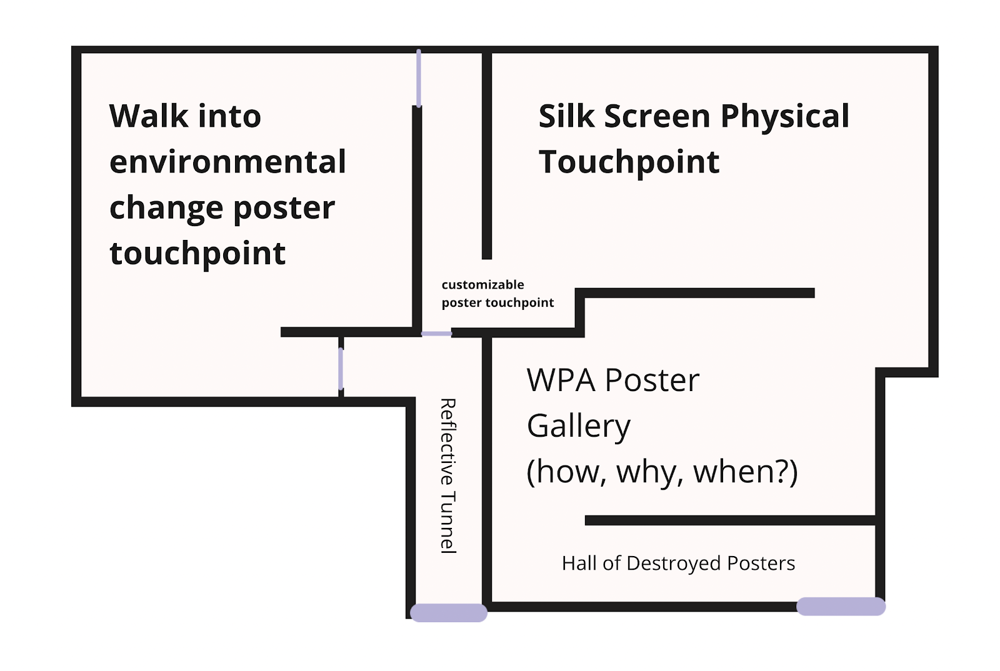
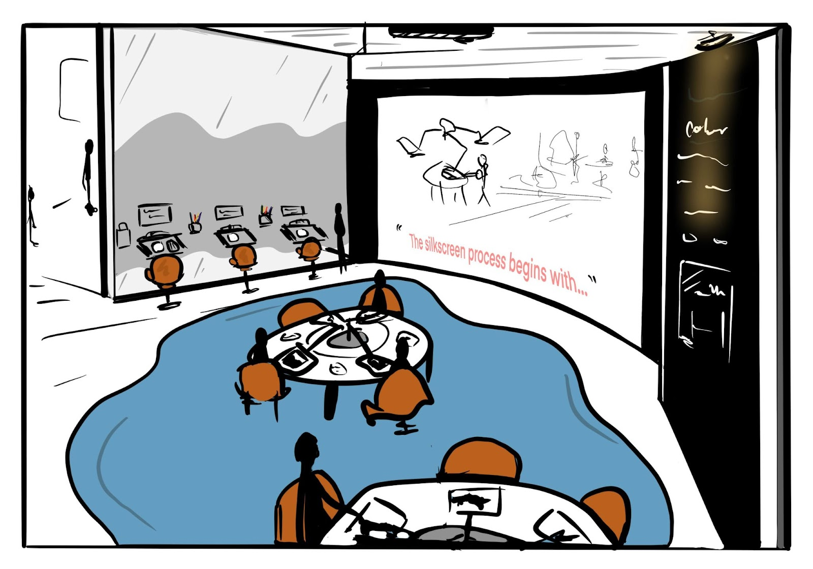
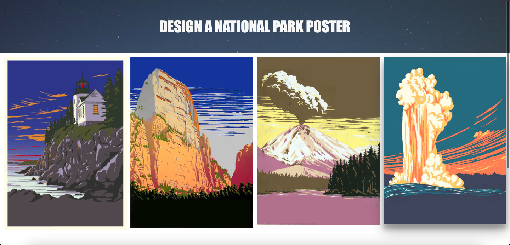
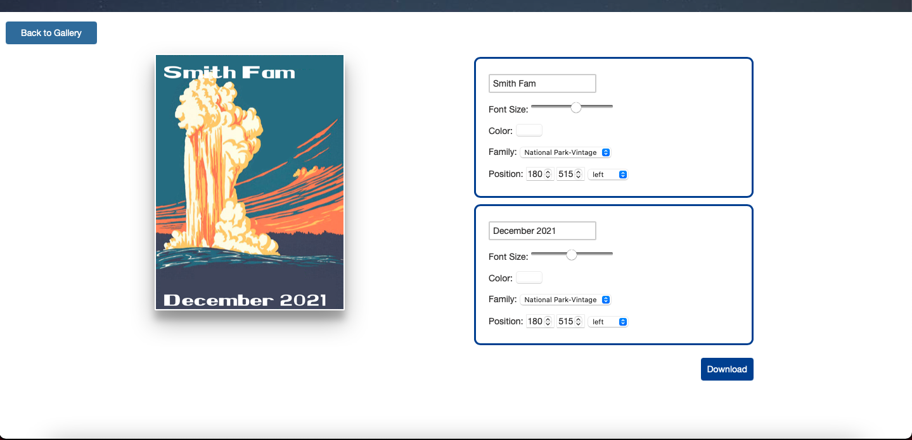
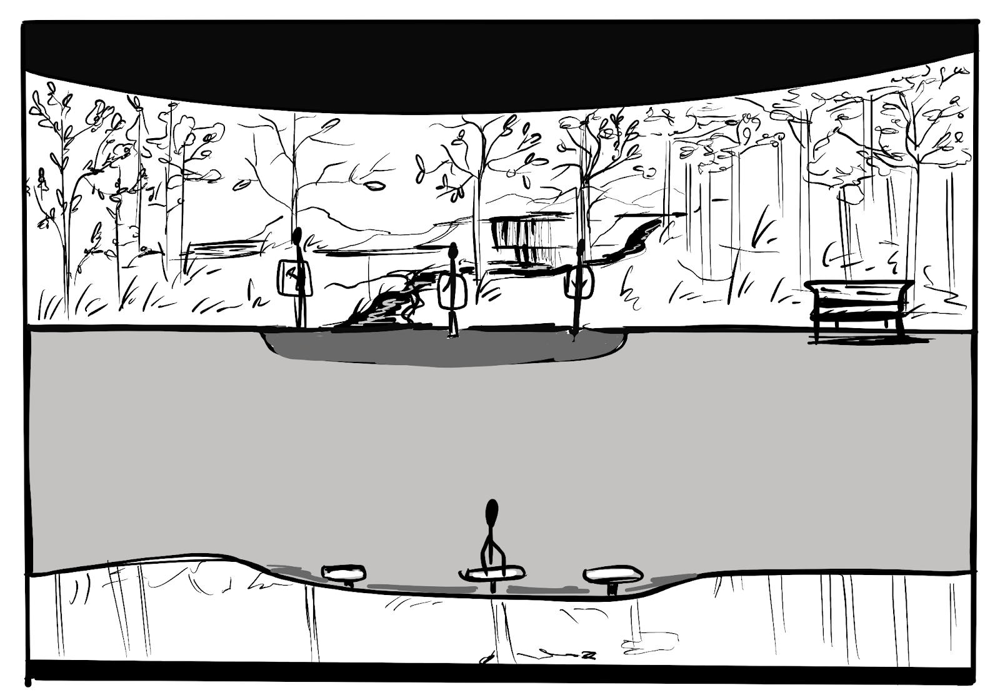
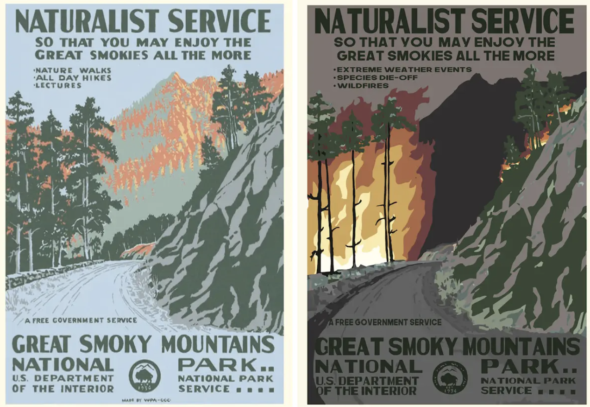
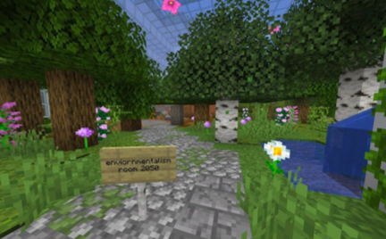
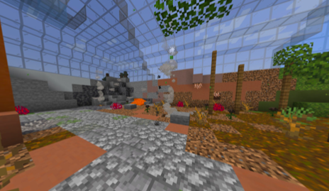
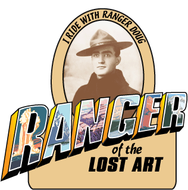
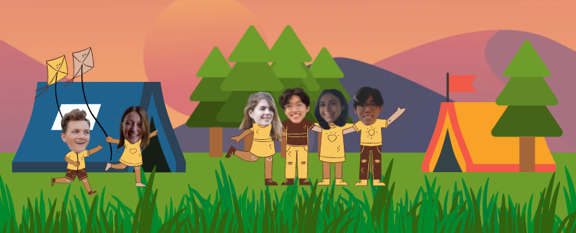

A Day at the Museum
Project Scope
For this project, we curated a design history exhibit surrounding the Works Progress Administration's (WPA) posters of the late 1930's. Specifically, the influence of the 1,400 national park posters released at the time.
See a brief walkthrough video of our art museum here
Exhibit Highlights
- The unappreciated value of the posters at the time of their creation
- Doug Leen's journey to collecting the historical artifacts
- The design of the posters using silk-screening methods
- What the posters design and impact now represent in modern society
Touchpoint 1
Interactive silk-screen printing room allowing visitors to explore the restrictions and process of creating a silk-screen poster with a limited color palette.
More InfoTouchpoint 2
Interactive kiosks to design your own poster on a digital screen. Visitors are able to choose a blank poster and personalize it using generated text.
More InfoTouchpoint 3
Two-part immersive room introducing the effects of climate change on the environment and empowering visitors using a digital reflection to add their mark to a community generated forest.
More InfoDesired Impact
We want visitors to learn about why the creation, restoration, and impact of the WPA national park posters is important and how it has or will impact their personal life. Additionally, we want to foster a learning experience to help visitors of all ages and backgrounds connect and nurture feelings of activism through an understanding of the design.
A WPA National Park Poster Exhibit
During the Great Depression, FDR hired unemployed artists as a part of his New Deal. Some of these artists were tasked with making posters promoting the national parks. Two million of these were mass-produced and were displayed outside, tacked to bulletin boards or stapled to posts. They were eventually left to the elements and slowly forgotten and disintegrated.
The earliest posters were painted by hand, but they were later adapted to silkscreen so they could be mass produced. “The printing of a poster was a collaborative effort. Artists were responsible for the poster's design, color selection, and sometimes the cutting of the stencils used to print the poster. The workshop's technical staff screened the posters. The exchange of ideas between the designers and the printers resulted in a technically and artistically well-balanced poster. With this silk screening process, as many as six hundred posters were printed in a day.” The silkscreen process is also partly responsible for the iconic design of the posters, especially their limited color palettes and their vector art-like feel.
Flash forward to the 1970's where park ranger Doug Leen was adding stuff to a burn pile and noticed one of the WPA posters on the wall. Intrigued, he took it home and hung it on his wall. A few years later when someone asked him if he had any ideas about making a poster commemorating the place where he had worked, he took a fresh look at the poster he had found.
He discovered that it was a silkscreen print produced during the WPA era and it ignited his curiosity. He began looking for other posters and found a similar one popping up all over the country. Today, he has made it his life's work to find and preserve these posters. He has since teamed up with illustrator Brain Maebius to recreate and mass print the posters for the newer national parks using similar styles and methods. Leen is offering rewards for two specific posters that he hasn't found yet.
Annotated Portfolio
Goal: gain a solid understanding of the space we were working in, researching how current museum exhibits engage users and hold interest was vital to our ability to curate a captivating exhibit ourselves.
Approach: we ventured into several different museums (The Indianapolis Museum of Art (Newfields Museum) and the Museum of Science and Industry, Chicago) to examine how they generated interest with interactive elements in order to determine what was successful in drawing attention and engaging the participants to better inform our touchpoint ideation.
Newfields: Design Exhibit
Within the design exhibit there was an interactive space called the “Design Lab” where visitors could take a journey into a designer's process. They could evaluate the design of chairs, sketch ideas, 3d model, and collaboratively ideate.
In another section of the design exhibit, visitors are able to take part in the design process that they have been learning about in the museum. Light tables were provided for visibility and prompts were set up in front of each station to provide inspiration. Low chairs provide better accessibility for a child wanting to engage.
The design exhibit at Newfields was a great introduction, opening our minds up and being able to explore a curated experience with more intent and desire for understanding than a typical walk through the museum. We were able to experience and evaluate the touchpoints such as the ones listed above.
Design Lab
This was a great experience that really captured the thought process of what a designer thinks through when creating something. We really enjoyed the ability to create with each other and design something easily with provided materials.
We carried this idea of understanding the process of a designer in our silk screening touchpoint. Similarly, we are trying to get visitors to engage in what it feels like to produce an image like the original artists of the WPA national park posters did.
Sketching Light Boxes
The sketching stations were really fun to engage in and see what others were drawing. We found it to be a positive interaction overall, but noticed a large flaw in it's design. Unlike the design lab, there was no substantial context given to the visitor on what to design or sketch. This led to people creating images that did not reflect any design process like the prompts suggested. We kept this in mind when creating our touchpoints as we wanted users to engage with the design process we were representing in our exhibit.
Museum of Science and Industry: Awareness
This exhibit was a demonstration of the impact humans have had on the environment through the past few years. This was done in an attempt to make visitors aware of the impact humans have on the natural world.
This exhibit was very related to what we are trying to portray in our national park poster design exhibit where we are focused on the environmentalism perspective that the posters represent. The feelings of despair, morality, and realization we experienced from this exhibit was something we wanted to be able to reproduce in our own exhibit to create powerful feelings that drew people to more environmentally conscious actions.
Review
Visiting interactive and engaging museum exhibits was crucial to our process in understanding how they are curated in an impactful way to all visitor types. Many interactive elements, like the Design Lab, showed us how to teach visitors in a fun and immersive way while others helped us see flaws that could be leveraged to create a more cohesive exhibit of our own.
Exhibit Walkthrough
Here are the different rooms with pictures for reference:
The exhibit will begin with a hallway of destroyed or decayed posters. We want our patrons to get a sense of how the posters were originally displayed in the national parks–pinned to a bulletin board or stapled to a post and left out in the elements to be forgotten and lost. Normally, pieces in a museum are well preserved and eloquently displayed, so seeing destroyed posters will rouse curiosity in museum-goers and get them wondering what's going to happen next.
In the next room, we will harness that curiosity to really dig into the design history and a lot of other educational information. Here, the re-discovery of the posters will be explained as well as showing posters and design artifacts in their complete state. We want the patrons to understand the why, how, and when of everything here. This should satisfy the user's curiosity, and some younger patrons begin to get bored, which would draw them to the next room.
Following the design history portion is a room that focuses on how the posters were made using silk screen techniques. To teach patrons about silkscreening, there will be a short video, artifacts on the walls, and touchpoints around the room so people can try silkscreening for themselves. Hopefully this room will re-ignite some curiosity and get them excited to do hands-on stuff.
After that, the next room will show variations of the national park posters. In this room, we want our patrons to open their minds to new possibilities, visualize connections from the influence of old styles on today's artists, and see personal connections to design style.
To do this, we will have a touchpoint where museum-goers can put their own words on a poster. The design artifacts and posters displayed will show different styles of the posters and witty or thought-provoking redesigns (for example, posters that feature bad yelp reviews or imagine what climate change would look like in the parks).
Building off the reflections users may have had as well as the climate change posters, there will be a little walkway that introduces an environmentalist perspective on the designs. Following that will be an immersive experience which highlights climate change within the national parks, because we wanted to make connections to current events and embody what is happening today. This room will show green, flourishing natural life which slowly decays into a desolate wasteland as the user walks through this area.
Following that room will be the exit tunnel where museum-goers can reflect on their experience. This will be the final touchpoint, where users can make an environmental pledge and it will become a leaf on a tree. Ultimately, we want the patrons to understand that just like Doug Leen and Brian Meebus restored the old posters, that same legacy can be carried on to restore the environment.
Cultural Probes
When creating our cultural probes, we wanted to make them like a gift where people could explore the activities and have fun. Our goal was to capture the emotional experiences people had when visiting either Yellowstone, Smoky Mountain, or Acadia National Park.
Backpack Probe Tour
Below are the different activities we put in our cultural probe. The backpacks also included some simple instructions, while still trying to leave room for exploration and creativity. You can find the instructions and full-size photos returned from our probes in Appendix [x].
National Park Experiences Captured
Our team enjoyed reading the memories people shared from their National Park visit. We were able to pull out particular contexts from our participant's writing that had encapsulated their experience. We then used these participant experiences as inspiration moving forward for the types of responses we would want people to experience after visiting our museum exhibit.
These are paraphrased key descriptors that we identified from the stories written on the back of postcards. Our biggest inspiration from these descriptors is to create a museum experience where someone leaves excited to share the exhibit with other people.
Final Touchpoints
Screen Printing Process
The screen printing process is the first touchpoint that patrons will experience. After seeing and feeling posters in the previous room, patrons will get to choose a poster to recreate with a limited color palette. On the wall, written instructions are complemented with a video guide that walks them through the process. Sitting at a station, they can use color coded stencils to fill each section of the poster from the limited palette.
Emotional Goals for Patron
- Inspired by the screen printing process
- A sense of completion from creating their own poster
Digital Remixes
After recreating an original poster through the physical process, patrons interact with a digital experience that allows them to create their own remix of a famous poster. New posters can be made with words typed by patrons that add a personal touch to the experience. These personal posters can be sent to them by email to save on their phone or print at home. This is the last activity they will experience before a major shift of mood in the exhibit.
 Environmental Pledge
Before exiting the exhibit, patrons have the opportunity to reflect upon or support environmental change through a pledge. Tablets along the wall encourage patrons to reflect on how they can support and preserve National Parks by being more environmentally friendly. Digital trees have leaves filled with conservation ideas from other patrons for inspiration, and submitting their own ideas allows them to see their ideas grow and come to life. Before leaving, patrons can explore the space and immerse themselves in actionable ideas that can help them contribute to the fight against climate change.
Emotional Goals for Patron
- a fresh sense of the imminent effects of climate change
- a sense of responsibility to the parks
- curious about changes they could make in their daily life
- inspired by actionable ideas of conservation
Exploring Touchpoints through Ideation
As a team, we set out to create some initial designs using the emotions and feelings we derived from the cultural probes and the immersive experiences we discovered at Newfields. Each part of the exhibit we ideated on is meant to further the understanding of the history of the National Park Posters as well as develop some kind of meaning or relationship between the patrons and the parks.
Immersive National Park Room
This room would provide a deeper understanding of why people had an appreciation for the parks, and why the posters are highly sought after as the parks have been resurrected by the American people. It was important to us that even the people who have not gotten to experience a National Park still get to feel the magic and wonder of being in one — something that our cultural probe participants expressed frequently throughout their responses..
Interactive Walls
These interactive walls allow patrons to connect with multiple parks, by showing the components of each park that makes them unique. Patrons can also use these walls as a photo opportunity to share their experience with family or on social media.
Create Your Own National Park Poster
This touchpoint gives patrons the opportunity to get creative! Patrons would have access to the traditional limited color palette that was used when the National Park Posters were designed. One of the setbacks we quickly identified with this idea was that it may be intimidating or overwhelming to “non-artistic” patrons due to the lack of structure to the activity. This is something we took into consideration for our further iterations.
Reflective Touchpoint
The Parks will always remain a national treasure, but whether or not they will withstand our harmful environmental impact is less certain. The National Parks have given people memories, honeymoons, and exciting trips away from home. We want to show our patrons that it's time to give back to the earth.
We wanted to find a way to feature some of the modern interpretations of the posters to show how the legacy of the posters is still carried on by artists today. (see below)
These posters were created by Hannah Rothstein and illustrate what she predicts the National Parks will look like in 2050 if we fail to act against climate change. Her art inspired us to create the following touch point. (next page)
Group Critique Feedback
During the course of our project, we had two group critiques that consisted of sharing our progress and receiving feedback on our overall narrative, our touchpoints, and any other concepts we shared.
“I find it hard to stay engaged if there isn't enough interactivity”
Peer during our Group Critique
This quote from our Group Critique really helped us reevaluate how we are building emotional and memorable connections between our exhibit, our touchpoints, and our patrons. In our further iterations, we really focused on the feelings we are trying to evoke and what we want our patrons to take away from the experience.
Solidifying a Narrative
- Missing the motivations in our narrative
- Why was there a sudden desire to refurbish the posters?
- Why are the posters still relevant today?
Strengthening Our Touchpoints
- “Create Your Own National Park Poster” touchpoint
- Not everyone wants to sit down and create a masterpiece while they are going through a museum exhibit
- Make it more accessible for those who are artistically “challenged”
- Make sure the physical space connects to the posters themselves
- The interactive walls are aesthetically pleasing, but how do they fit into the story we are trying to tell?
Cultivating Experiences
- Museum Entrance (destroyed posters)
- Make the first thing they see more shocking. Hundreds of destroyed posters is more impactful than just a few scattered throughout the main entrance.
- Museum Exit
- Encourage visitors to reflect on the environmental perspective of the parks. Give them something to think about as they walk out of the museum.
Touch Point Ideation and Iterations
Silkscreening Touchpoint (New)
As we continued to learn about our problem space, we discovered that the silkscreening method introduced by the artists who designed the posters was a large contributor to the future of how we mass produced products.
The silk screening method that was used to create the posters is a unique part of the design of the National Park Posters. We wanted to give our patrons the opportunity to engage with a simple and fun version of this art style that can be done by children, adults, and families.
Reflective Touchpoint (Iteration)
Inspired by our initial Reflective Touchpoint and Immersive National Park Room
From our group critique, we realized that if we really wanted people to be thinking about the last touch point of the exhibit on the way out, it had to be as memorable as the entrance.
Instead of having the environmental pledge stand in between a “before” and “after” climate change poster, we decided to create an immersive experience where patrons would walk into a National Park poster, but as they walk through it, nature starts to fade away and the destruction humans have caused starts to take over.
 This would lead into the environmental pledge section, where patrons can make a pledge and watch the trees grow leaves as each pledge is submitted. This represents the regrowth that we can accomplish by taking small but meaningful steps to combating climate change.
Design a National Park Poster (Iteration)
Taking the feedback we got from the Desk Critiques into account relating to artistic ability making it hard to design a modern poster from scratch, we decided to make this touch point completely digital.
This touchpoint allows our patrons to partake in the creativity that the National Parks Posters have inspired in today's artists. They will have access to a full color palette, a few common fonts used across National Parks Posters as well as some modern ones, as well as some inspiration surrounding them for some alternative takes on the posters. After designing a poster, you can email it to yourself to keep forever, without wasting any paper!
Our Museum through the Lens of Visitors
The graphics above show the experience of a parent and an 8 year old child visiting our exhibit to identify the different potential felt experiences and the learned experiences for children versus adults visiting our museum.
Major Insights:
- A child may lose interest more quickly in the less interactive portions of our exhibit such as the poster gallery
- A person should be able to skip some parts of the exhibit and still know what is happening; all of our rooms are National Park poster-focused
- The child will may not think as deeply about the exhibit as the parent, but would still enjoy the immersive aspects and newness of the different exhibit spaces
- The parent could be restless during the silkscreen portion or towards the end
- Could combat this with comfortable seating, warmer non-harsh lighting, etc.
- The end tunnel is peaceful which could end the exhibit on a relaxing note
Final Museum Takeaway
The biggest takeaway we want people to leave our exhibit with is to feel empowered to follow in Ranger Doug Leen's footsteps. Just like Doug restored the destroyed WPA National Park Posters, we want people to feel empowered to help restore the environment and keep the National Parks alive. After all, these design artifacts wouldn't exist without the National Parks.
Team Reflection
Back in October when our team toured the Newfields Art Museum in Indy, we just brushed the surface of the limitless interactive touchpoint possibilities. We soon found ourselves with piles and piles of ideas and loads of excitement. This project allowed our team to learn about the in depth story behind the WPA National Park posters and walk people through that story in an engaging way. Our team's desire to advocate for the National Parks and environment came through the environmental activist stance we hope people leave the exhibit with. Overall, we learned a lot through prototyping, experience mapping, class group crits, sketching, and collaborative whiteboarding, and we are filled with satisfaction of how this museum exhibit turned out!